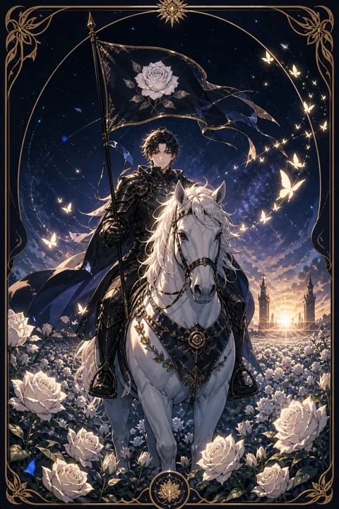

XIII 죽음 카드 — 끝을 보내고 맞는 새 국면
죽음 카드 한눈에 보기
죽음 카드 상징 읽기

동네보살의 카드 그림은 전통 라이더–웨이트 덱의 뜻을 새 그림으로 옮긴 것입니다. 아래 상징 설명은 전통 덱의 그림을 기준으로 합니다.
검은 갑옷을 입은 해골 기사가 흰 말을 타고 천천히 다가옵니다. 해골은 겉모습이 다 사라진 뒤에도 남는 본질을, 흰 말은 이 변화가 순수하고 자연스러운 흐름임을 뜻합니다.
기사가 든 검은 깃발에는 흰 장미가 그려져 있습니다. 장미는 끝 속에 담긴 정화와 새 생명을 상징해, 이 카드가 공포보다는 새로워짐에 관한 이야기라는 것을 보여줍니다.
말 앞에는 왕관을 떨어뜨린 왕, 두 손을 모은 성직자, 고개를 돌린 여인과 아이가 있습니다. 신분과 나이에 상관없이 누구에게나 삶의 한 단락이 바뀌는 때는 찾아온다는 의미입니다.
멀리 두 탑 사이로는 해가 떠오르고 강에는 배가 흘러갑니다. 한 시절이 저물어도 다음 날의 해가 다시 뜬다는 희망의 장면입니다. 말의 느린 걸음은 변화가 한순간이 아니라 천천히 받아들여지는 과정임을 보여 줍니다.
죽음 카드 정방향 뜻
죽음 카드는 실제 사람의 죽음이나 신체에 관한 예언이 아닙니다. 타로에서 이 카드는 한 시기나 관계, 생각의 틀이 수명을 다하고 다른 모습으로 바뀌는 과정을 뜻합니다.
정방향으로 나왔다면 이미 마음속으로는 끝났다고 느끼던 무언가를 정리할 때가 왔다는 신호입니다. 오래 머문 자리, 익숙하지만 더는 나를 키우지 못하는 습관, 형태만 남은 약속 같은 것들이 여기에 해당할 수 있습니다.
끝을 맞이하는 순간에는 서운함과 허전함이 따르지만, 비워진 자리에 새로운 기회와 에너지가 들어옵니다. 애벌레가 번데기를 거쳐 나비가 되듯, 이 변화는 잃는 과정이라기보다 다음 단계로 옮겨 가는 과정입니다. 미련을 조금씩 내려놓을수록 전환은 부드럽게 이루어집니다. 끝이 있기에 다음 장이 열린다는 점을 기억해 두세요.
죽음 카드 역방향 뜻
역방향의 죽음은 이미 끝나가는 것을 놓지 못해 변화가 길어지는 모습을 보여줍니다. 마음은 떠났는데 익숙함과 두려움 때문에 결정을 미루고, 그 사이 에너지가 조금씩 새어 나가고 있을 수 있습니다.
붙잡을수록 이별이 길어진다는 것은 억지로 버티는 동안 새로운 것이 들어올 자리가 막힌다는 뜻입니다. 끝을 인정하지 않으면 같은 서운함을 매일 조금씩 되풀이하게 됩니다.
다만 역방향이 서두르라는 재촉만은 아닙니다. 큰 변화를 한 번에 받아들이기 어렵다면 작은 것부터 천천히 정리해도 괜찮다는 의미도 있습니다. 물건 하나, 연락 하나, 오래된 계획 하나를 내려놓는 데서 시작해 보세요. 조금씩 비워 낼 때 변화에 대한 두려움도 함께 줄어듭니다. 미련이 남는 것은 그만큼 소중했다는 뜻이니 그 마음을 부끄러워할 필요는 없습니다.
연애에서 죽음 카드
솔로라면 지난 연애의 흔적을 정리하는 것이 새 인연을 맞는 첫걸음입니다. 예전 사람과 비교하는 습관이나 사진, 대화 기록처럼 마음을 붙잡는 것들을 떠나보내면 비로소 새로운 사람이 눈에 들어옵니다. 연애에 대한 낡은 기대나 두려움을 바꾸는 시기이기도 합니다.
연애 중이라면 이 카드를 곧바로 이별로 받아들일 필요는 없습니다. 설렘 위주였던 관계가 생활을 함께 나누는 관계로 넘어가는 것처럼, 두 사람 사이의 방식이 달라지는 변화를 뜻하는 경우가 많습니다. 예전 같지 않다는 서운함에 머물기보다 지금 단계에 맞는 새로운 약속을 함께 만들어 보세요. 이미 오래전 끝난 관계를 억지로 이어 왔다면, 솔직한 정리가 서로를 위한 선택일 수 있습니다. 변화의 시기를 함께 건넌 연인은 이전보다 깊은 신뢰를 얻곤 합니다.
재회·속마음 질문에서 죽음 카드
재회 질문에서 죽음 카드가 나오면 예전과 똑같은 관계로 돌아가기는 어렵다는 뜻으로 읽힙니다. 상대는 지난 관계를 이미 하나의 끝난 단락으로 받아들이고 있을 가능성이 있습니다. 그래도 완전히 닫힌 결말만 뜻하지는 않습니다. 과거의 모습을 내려놓고 두 사람 모두 달라진 상태로 새로 시작한다면 다른 형태의 인연이 생길 여지는 남아 있습니다. 상대의 속마음에는 고마움과 아쉬움이 함께 남아 있을 수 있지만, 같은 방식으로 돌아가고 싶어 하지는 않을 가능성이 큽니다. 재회를 원한다면 예전의 나를 고집하기보다 지금 달라진 내가 어떤 관계를 만들 수 있을지부터 생각해 보세요.
일·금전에서 죽음 카드
일에서는 오래 해 온 방식이나 역할을 정리하고 새 체계로 넘어가는 시기입니다. 부서 개편, 업무 전환, 퇴사나 이직 고민처럼 한 단락을 닫는 일이 생길 수 있습니다. 끝나는 일에 매달리기보다 인수인계와 마무리를 깔끔하게 해 두면 다음 자리에서 좋은 평판으로 이어집니다.
금전 면에서는 수익이 나지 않는 지출이나 잊고 지낸 구독, 효과 없는 고정비를 과감히 정리하기 좋은 때입니다. 낡은 흐름을 끊어 내야 새로운 수입 구조를 고민할 여유가 생깁니다. 새로운 업무 방식이나 도구를 받아들이는 데 거부감이 들 수 있지만, 초기의 낯섦을 견디면 오히려 일의 부담이 줄어드는 경우가 많습니다. 정리할 것과 남길 것의 목록을 적어 보는 것부터 시작해 보세요.
죽음 카드는 예일까 아니오일까
죽음 카드는 지금 형태 그대로 이어지기보다 한 단락이 끝나고 바뀐다는 뜻이라, 현재 모습을 유지하는 질문에는 아니오에 가깝습니다. 역방향이면 끝내야 할 것을 붙잡아 변화가 늦어지는 상태라 결론이 더 미뤄질 수 있습니다.
자주 묻는 질문
죽음 카드 역방향은 나쁜 뜻인가요?
역방향의 죽음은 이미 끝나가는 것을 놓지 못해 변화가 길어지는 모습을 보여줍니다. 마음은 떠났는데 익숙함과 두려움 때문에 결정을 미루고, 그 사이 에너지가 조금씩 새어 나가고 있을 수 있습니다.
죽음 카드가 연애 질문에 나오면요?
솔로라면 지난 연애의 흔적을 정리하는 것이 새 인연을 맞는 첫걸음입니다. 예전 사람과 비교하는 습관이나 사진, 대화 기록처럼 마음을 붙잡는 것들을 떠나보내면 비로소 새로운 사람이 눈에 들어옵니다. 연애에 대한 낡은 기대나 두려움을 바꾸는 시기이기도 합니다.
타로 카드는 어떻게 뽑나요?
타로 카드 페이지에서 카드를 섞으면 메이저 아르카나 22장이 펼쳐집니다. 마음이 가는 세 장을 고르면 과거·현재·미래 자리에 놓이고, 한 장씩 뒤집어 자리와 방향에 맞는 풀이를 읽습니다. 정방향과 역방향은 섞는 순간 정해집니다.